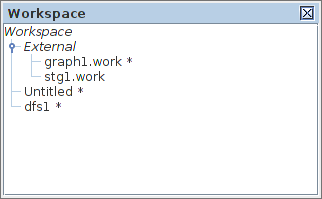

help:workspace_panel
Help: Workspace
The work entries can be organised in workspaces to simplify the operations on multiple related graph models and access them as a single object.

The works which have been saved into a file are grouped under the External branch of the workspace tree. The works entries which have never been saved into a file or have been modified after the last save have asterisks next to their names.